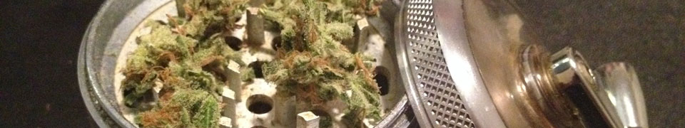
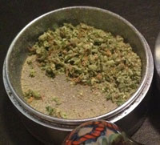

That shit is called Bruce Banner
Bruce Banner is listed as a hybrid, but a strong sample will knock you on your ass like a good Indica. I would not recommend you get to know Mr. Banner if you have anything important to do the next few hours, including drive or think. In short, Bruce Banner is usually a high THC, high potency hybrid that sports thick red hairs and a black licorice smell. Leafly already has charts and a numbered system, so if you're looking for statistics it's already been published. If you want to know what it's like to actually smoke Bruce Banner, read on.
Getting Ready
I love the process when I get the bag home. It's great, the whole trip. My wife and I share our impressions, "Damn, look at that!", "Shits' dense." etc. When we get a chance to smoke it's cathartic before I even smoke. Who doesn't enjoy giving freshly ground weed a good whiff? What could be better? As I was preparing the bowl Loser by Beck came on and I thought "yea, this is alright." A good song goes a long way to make a pleasant smoke, so keep in mind that I had pretty righteous music going.
<<<<<<< HEAD
The nugs were satisfyingly dense and very hairy. It's not a sure thing that the weed is good if you've got solid nugs, but it's never a bad sign. The anise smell was pleasantly strong as I broke up the large nugs and loaded the grinder. It was well cured product so I didn't have too much of a sticking problem. It ground well and the smell got even more pungent, but still nice. It's spicy and musky, best described by the absence of the strong chemical other strong strains usually have. Imagine a nice herbal tea with a hint of licorice. Like all good weed, I would recommend grinding. You can just shove whole nugs in there, like a savage, but it will always smoke better well ground. I use a crank grinder to make sure it burns nice and even like.

Ready for burning.
=======
The nugs were satisfyingly dense and very hairy. It's not a sure thing that the weed is good if you've got solid nugs, but it's never a bad sign. The anise smell was pleasantly strong as I broke up the large nugs and loaded the grinder. It was well cured product so I didn't have too much of a sticking problem. It ground well and the smell got even more pungent, but still nice. It's spicy and musky, best described by the absence of the strong chemical other strong strains usually have. Imagine a nice herbal tea with a hint of licorice. Like all good weed, I would recommend grinding. You can just shove whole nugs in there, like a savage, but it will always smoke better well ground. I use a crank grinder to make sure it burns nice and even like.
>>>>>>> ee63c51185d111b7ed55a21900574bb1c70d2711
That Magic Moment
As soon as you take a hit you know why it's named after the green one. This is not pink tea, it's some serious ganja. It tastes like weed and smoke, it's strong enough that there is no distinct flavor; the black licorice smell isn't present in the final taste of the smoke.
You'll cough but you won't lose your shit. It's very mild compared to a more gnarly strain, Trainwreck for example. If Trainwreck is a 10 for harshness (and it is) then Bruce Banner sits around a 3. My purchase was well cured and smoked very well, leaving the slight smell of burning candy in the air. A
But how does it make me feel?
I went light headed and giddy as soon as the smoke set in. The high started strong in my head and for the first stage it was strong in my arms and legs as well. My creativity surged and I held delicate, crystalline thought at my finger tips. I had a great idea for a website (no, seriously, we should do that and make like, a billion dollars.) As the music got louder, before I zoned out completely, I remember thinking it would make great poetry, me sitting there getting high.
Before long Hulk smashed my day dream. Where I was juiced and creative, now I am drained and lazy. I didn't want to think my own thoughts and drifted into Let Me Go by Cake. Not every strain is great at helping make music more enjoyable, this batch of Bruce Banner was a bridge back to my early days when I could fall into a good song like down pillow. John McCrea became hypnotic, as his laconic voice is wont to do. Let me go indeed. This isn't a small point, it's noteworthy when a bag doesn't just get you high, but elevates you.
Suddenly the time dilation set in and the bass line was bared before me; I could follow the rythem as it travelled up and down the scale. Each careful pluck resonated through me while I coughed and finished the bowl. Chevelle came on next and pretty much crapped all over my high.
I like Chevelle, but Bruce put me in a good mood and I didn't want anything heavy. I have a playlist just for smoking (of course I have a playlist just for smoking) and the next one up was a classic Ugly Duckling. track. I already lost the slow ride I was on, but at least it helped.
When I sat down it felt like a strong body high, but later it moved back into my head and stayed there. When the initial rush wears off it settles into a stuffy nostrils kind of high. I'm not super hungry or tired but I am definately couch locked. Over all I like it, not my favorite, but I'm not even sure what my favorite would be.
Am I re-upping?
I would, happily. Different tokes for different folks, but if you are in the mood for an old school, groovy high, Bruce Banner is right for you. Again, a good example of Bruce Banner is going to be strong. You'll start off with a body high and end up in the attic, so if that's what you're after you'll be set. I wouldn't recommend Bruce if you're going hiking or about to play some F2, it's just too heavy to enjoy a lot of activity. I'd recommend you're favorite spot to relax and some good music to ruminate upon. Look for solid nugs, densely packed. Should smell nice with a hint of licorice.
Over all, it was a good purchase. Like Snoop said, as long as you got what you paid for, thats what you came for.
Comments
I can't stop talking is my "culture" blog. God I hate that phrase, but for lack of a better...
What can't I stop talking about? Nonsense that only other dorks would care about. I'm deeply interested in Thor: The Dark World. I subscribe, and contribute to, the Dwarf Fortress subreddit. Speaking of reddit, I can't stop talking about trolling GTA V fans on /r/gaming. I often talk at length about craft beer or home brewing; I know very little about either but I do know how to drink awesome beer. I play video games, main stream and indie. I don't care about the console vs. PC fight but I love watching people fight about it.
There are lots of things I can't stop talking about. For the most part the things I talk about are pretty petty - mostly I pontificate on whatever entertainment media I happen to be occupied with at the moment. I admit that it's not a grand path, but I also admit that I'm not a grand person.
Occasionally though, I will offer an insight of a more serious nature. I am worried about the state of the country and I will probably embarrass my self talking about it. I care a great deal about the culture I partake in, I'm a proud nerd I like talking about it. I worry too much about the state of the economy, the state of art in America, the consumer culture. There are lots of things I care about. What do they all have in common?
I know next to nothing about any of it. I have no education and no training on how one would professionally critique anything at all. I can't solve any problems and I am certainly no great thinker. If I am a philosopher, then I am a poor one.
I am, however, very passionate about all of it, all the stupid shit I pursue. My moods are mercurial and whatever I am interested in at the moment is what I love with my whole heart, for the moment. I've been a home brewer, an art student, a mechanic, a furniture mover and a laborer with a crew of illegals who taught me the Spanish word for prostitute. I role play, play video games, enjoy movies, TV, music and getting furious with strangers on reddit. In short, I'm not special at all and that's fine. Most people aren't special and as fun as it is to read articles by those who are inside the systems, those who get early game releases and private brewery tours, it's also worth hearing what a nobody thinks. We are all nobodies, for the most part. It's interesting to hear what a nobody thinks as long as that no body can turn a phrase.
And turn a phrase I can! Don't worry: I have plenty of stupid things to say and all the time in the world to say them. Take my hand as we explore the world of some idiot who can't stop talking, even when no body cares.
Comments
<<<<<<< HEAD